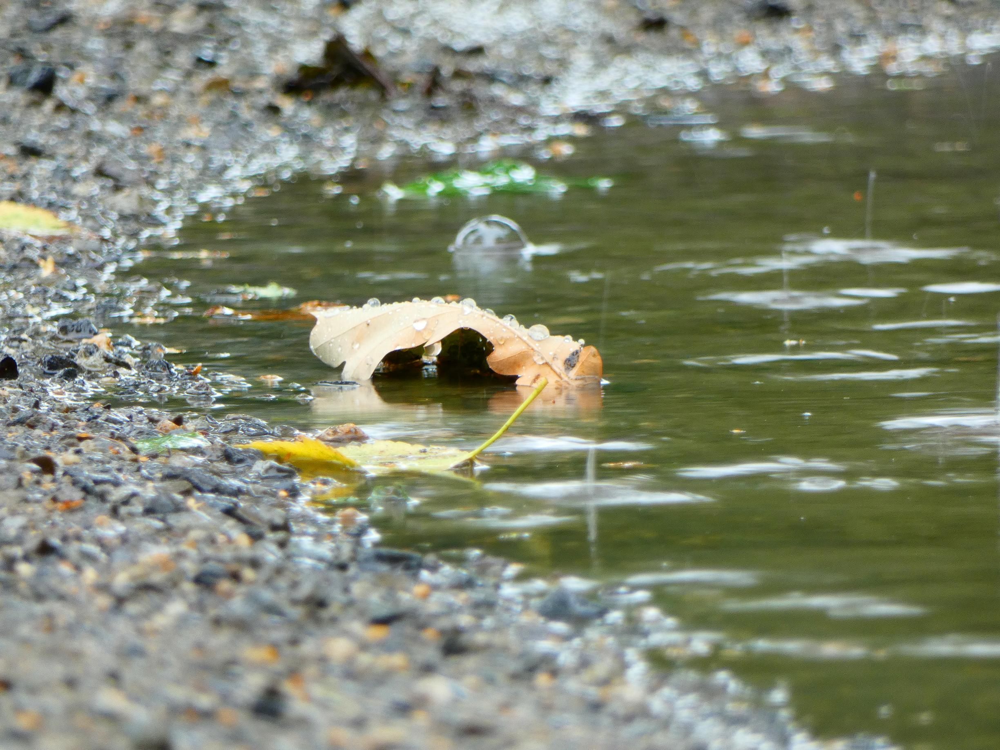
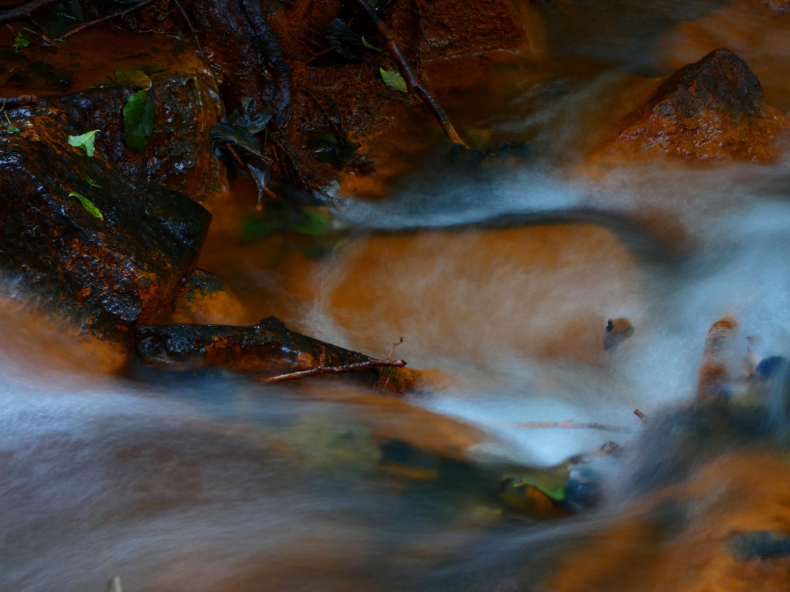

Happiest time of my life
Photography
In May I thought that my life could not become any better, but this week, there were multiple days I would rate
to be a 10/10 or 11/10, the first day to ever receive a 10/10 was 28.7.2023 and the first day to get an 11/10
was 29.7.2023. Let me tell you how every day for the last week looked like: I got up anywhere from 5-7 and
started writing texts, then I would do other tasks, meditate, … until 16:00 when I would be going to the gym,
and 17:00 - 19:00 where I would go for a walk. Yesterday, I wrote 4 texts, but that's not all, I went for a
3.5-hour walk.
The walk was intended to fulfill a task because I got invited to a birthday party, my grandmother recommended, I
create a photo of flowers, to print on a canvas. I never deliberately photographed flowers before. It was
raining the entire 3 hours I walked. As I arrived at the lake, I started to take the first great photos. Because
it was raining, I had to use my golden reflector to cover the camera, standing on a tripod. I walked all the
time and did not encounter a single person in my 3 hours. I tried a new path around the lake, which was not a
path along the way, but rather a path through the dense, rainy, and dark forest. It was hard to move, and I cut
myself multiple times. I stumbled upon multiple new things, such as 2 hunter's houses, and a small stream. Later
I came across a tree with yellow fruits, like little plums, and red fruits, just like the yellow ones. The
exploration of this part of the forest made me realize, how little empathy I have for depressed people. It's
impossible to be depressed if you are in nature and trying to create great photos in absolute quietness and
perfect whether to think about life, rain with twilight. I stopped multiple times to create photos. Being a
photographer is not about taking photos, it's about experiencing things and capturing them, better techniques
are just a plus. For example, I stopped at a stream to take a long exposure photo. After a while, the forest
along the lake reached its end. I was completely soaked with water at that point. That's why I decided, to top
it all off and jumped in the lake, with my clothes and shoes on. There is no point in taking off your shoes if
they are completely wet, to begin with. At that point, I was already heading back home, and the sky started to
clear a little bit, as I walked parallel to the river. The sun came out for a brief moment and I looked at a
double rainbow, which I could see both ends of. It continued to rain all the time. Finally, it was already dark,
and at 20:00. I took a few photos at the bridge on my way home.
Unfortunately, this is my last blog for a few days, because I have to focus on YouTube and programming again as
well as my business. But I have planned some amazing blogs for the future!
Enjoy these photos, and yes, I have found the right photo to gift at her birthday party.

Leaf in a puddle during rain

Long exposure photo of a stream

Bridge in Zittau

Long exposure photo of a stream

Trees